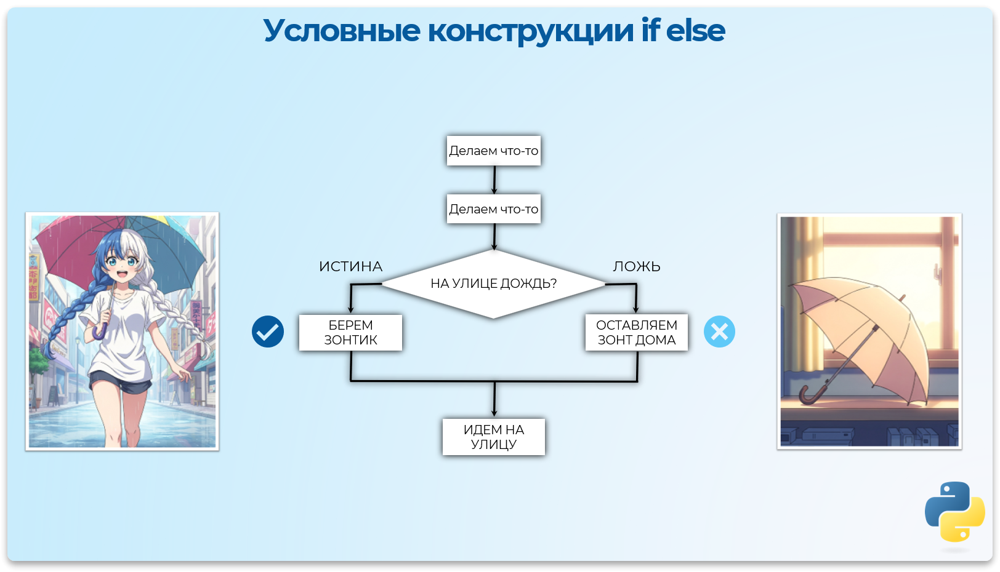
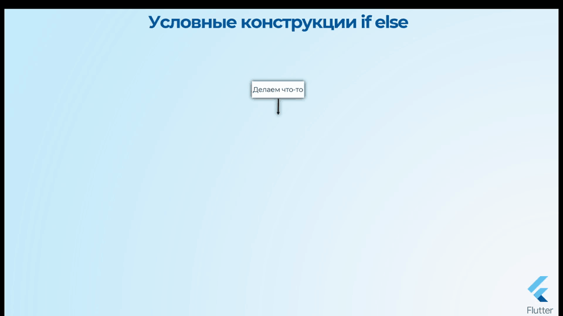
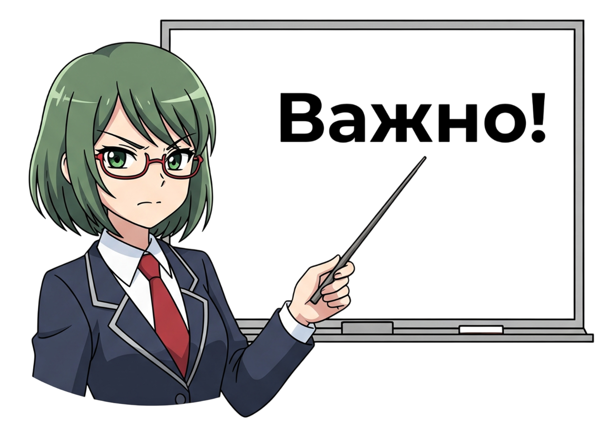
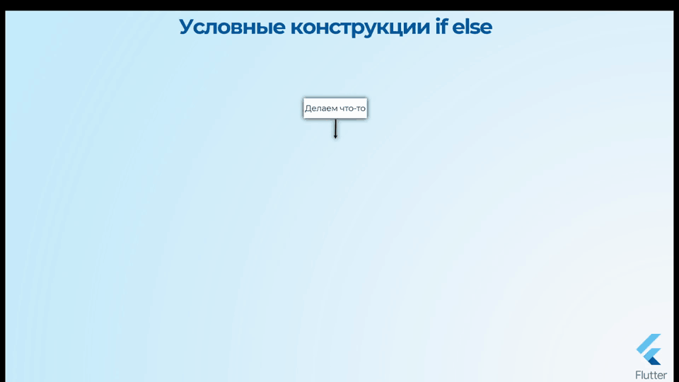
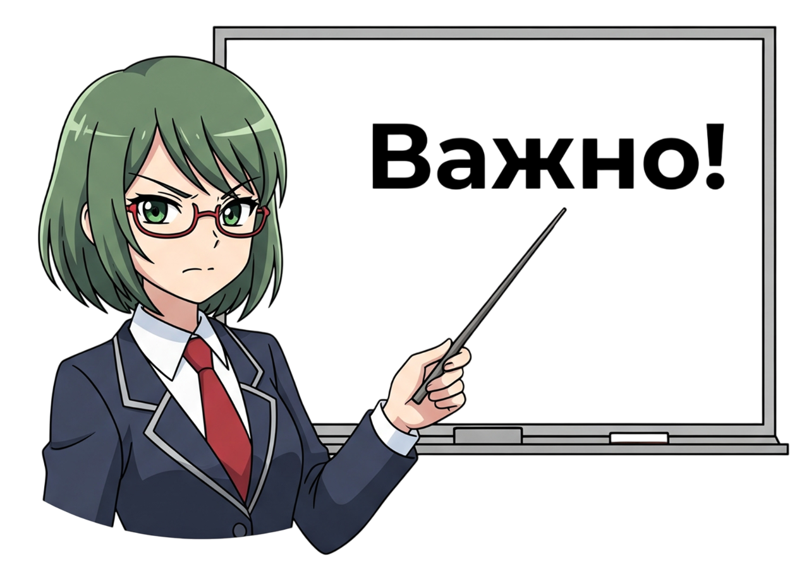

Условные конструкции
Управление потоком
Обычно программный код выполняется последовательно сверху вниз, строчка за строчкой, как мы его написали (поток выполнения).
Бывают ситуации, когда этим последовательным потоком нужно управлять. Например, при каком-то условии поток нужно направить в другом направлении, или вернуться и повторить какие-то действия. Для этого существуют операторы управления потоком.
Условные выражения позволяют программе выполнять различные вычисления в зависимости от значения логического выражения. Для того чтобы компьютер мог менять порядок действий и выполнять их не только в том порядке, в котором они напечатаны, используются условные выражения.
Условные операторы позволяют в зависимости от условия одну часть кода выполнить, а другую часть кода, наоборот, не трогать.
 



Главная фишка Python это обязательные Отступы
Отступы в Python
В Python блоки кода после if, elif, else и других конструкций определяются отступами (обычно 4 пробела), а не фигурными скобками {} как во всех остальных нормальных языках программирования
Условие Если (if)
Python - Простое условие if


time: int = 45
# Если условие Истина, то выполнить код с отступом
if time == 45:
print("Делаем перерыв")
В результате будет "Делаем перерыв"
Python - Если условие ложное
time: int = 5
# Если условие Истина, то выполнить код с отступом
if time == 45:
print("Делаем перерыв")
В результате код внутри условия никогда не выполнится потому что условие ложное
Условие Если-Иначе (if-else)
Выполняется только один из блоков кода в зависимости от условия.
Python - Конструкция if-else
time: int = 15
# Если условие ИСТИНА, то выполнить первый блок с отступом
# А иначе (если Ложь) выполнить блок после else:
if time < 45:
print("Изучаем теорию")
else:
print("Либо отдыхаем, либо практикуемся")
В результате будет "Изучаем теорию"
Условие Если-ИначеЕсли-Иначе (if-elif-else)

Python - Конструкция if-elif-else
time: int = 60
# Если первое условие ИСТИНА, то выполнить первый блок.
# Иначе, если второе условие (elif) ИСТИНА, выполнить второй блок.
# Если ни одно из условий не выполнилось, выполнить блок else.
if time < 45:
print("Изучаем теорию")
elif time > 45:
print("Выполняем практику")
else: # time == 45
print("Отдыхаем")
В результате будет "Выполняем практику"
Условная проверка диапазонов
Python - Проверка диапазона в условии
time: int = 14
# Используем цепочку сравнений для проверки диапазона
if 8 <= time <= 22:
print("Пятёрочка открыта 😁")
else:
print("Пятёрочка закрыта 😒")
В результате будет "Пятёрочка открыта 😁"
Тернарный оператор
Тернарный оператор в Python — это условное выражение в одну строку, которое возвращает одно из двух значений в зависимости от условия..
Python - Тернарный оператор
time: int = 10
# [значение_если_истина] if [условие] else [значение_если_ложь]
result: str = "Открыто" if 8 <= time <= 22 else "Закрыто"
print(result) # Открыто
Условные конструкции match-case
match-case
Начиная с Python 3.10, в языке появилась конструкция match-case, которая является мощным аналогом switch-case из других языков. Она позволяет сопоставлять значение переменной с одним из нескольких шаблонов.
Простая конструкция match-case
Здесь проверяется значение переменной day, и выполняется соответствующий блок кода.
Блок case _: (с подчеркиванием) является "шаблоном по умолчанию" и выполняется, если ни один из case выше не сработал.
Python - Простой match-case
day: int = int(input("Введите день недели: "))
match day:
case 1:
print("Понедельник")
case 2:
print("Вторник")
case 3:
print("Среда")
case 4:
print("Четверг")
case 5:
print("Пятница")
case 6:
print("Суббота")
case 7:
print("Воскресенье")
case _: # Аналог default
print("Неверный день")
В результате будет "Среда"
Объединение нескольких case
Можно сопоставить одно действие сразу с несколькими значениями, используя оператор |.
Python - Объединение case с помощью |
day: str = "Суббота"
match day:
case "Суббота" | "Воскресенье":
print("Выходной день")
case "Понедельник" | "Вторник" | "Среда" | "Четверг" | "Пятница":
print("Рабочий день")
case _:
print("Неизвестный день")
В результате будет "Выходной день"
Конструкция match-case также поддерживает более сложные шаблоны, включая условия, но об этом мы поговорим в продвинутых уроках.